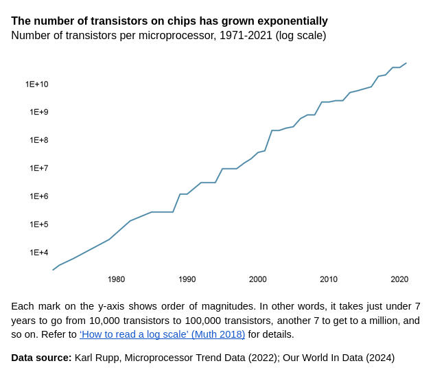

First published in Penang Monthly (October 2024).
Tiny semiconductors are the hidden engines behind today’s tech marvels, from artificial intelligence (AI) to electric cars. The semiconductor industry continues to cram an increasing number of elements onto integrated circuits1. In 1965, Gordon Moore, a founder of Intel, predicted that the number of transistors on chips would double every two years, a phenomenon referred to as Moore’s Law. Remarkably, the industry has mostly kept pace with Moore’s prediction—Apple’s M2 Ultra, for example, contains a staggering 134 billion transistors.
1 Moore’s 1965 paper was titled “Cramming More Components onto Integrated Circuits”.
Miniaturisation may be hitting a wall, but chip advancements are surging ahead. Design innovations like improved architecture and 3D stacking are cramming more power into existing transistors. For instance, Apple’s groundbreaking M-series chips condense immense processing power for next-generation smartphones and laptops. Specialised AI chips further accelerate application-specific performance, while innovations in compound semiconductors like silicon carbide and gallium nitride promise breakthroughs in data centres, cars, and communications.

Chip manufacturing
A marvel of engineering and a poster child for globalisation, the semiconductor industry thrives on a complex, geographically distributed supply chain. No single country reigns supreme; specialised firms around the world contribute to different parts of the supply chain. While cutting-edge fabrication plants (fabs) are concentrated in a few regions, other parts are scattered globally.
As miniaturisation nears its limits, value is migrating from shrinking transistors in the front-end of semiconductor manufacturing to maximising their efficiency through clever design. Design contributes a majority of the industry’s value, according to a 2021 BCG report.
Take NVIDIA, the world’s most valuable chip company. They design chips but outsource manufacturing giants like TSMC (Taiwan Semiconductor Manufacturing Company) handle the actual production. This “pure-play foundry” model empowers tech giants like Microsoft, Google, and Meta to design their own chips without fabs – as “fabless” chipmakers.
Chipmaking starts with slicing ultra-pure silicon into wafers. These wafers are etched with intricate designs using cutting-edge photolithography equipment, commonly procured from the Dutch manufacturer ASML. Once etched, the chips are assembled and tested, with locations like China, Vietnam, and Penang playing a role. Finally, the packaged chips are integrated into circuit boards for everything from phones to smart sensors.
While chip assembly (back-end) is traditionally seen as less valuable, innovations like 3D stacking are boosting its importance. Packaging-related innovations allow for more powerful chips despite miniaturisation limits. As a result, the future may see value more evenly distributed across all chipmaking stages, with each playing a crucial role in maximising performance.
A Geopolitical Pivot Creates Opportunity
Despite short-term weakness from a supply glut, the chip industry’s future looks bright. As of Q1 2024, microelectronics industry association SEMI reports positive trends in sales, inventories, and factory capacity. While demand recovery varies by sector, leaders see automotive and AI as 2024’s growth engines, with AI infrastructure (especially data centres) following closely. The sluggish consumer electronics market, particularly smartphones, is looking to on-device (‘edge’) AI, powered by neural processing units (NPUs), for a comeback.
In spite of the global chip slowdown, Penang’s electronics sector has soared. In 2021, foreign approved manufacturing investment skyrocketed to RM 74 billion, a tenfold increase from the past decade’s average (RM 6 billion), where 98.7% (2021) was attributed to the electrical and electronics (E&E) sector. This surge accompanies double-digit production growth (GDP) for Penang’s electronics industry in both 2021 (+16.5%) and 2022 (+21.8%).
Penang, a leader in back-end processes since the 1970s, is a prime beneficiary of the electronics industry’s shift towards geographical diversification. KPMG’s 2024 survey reveals that 53% of firms plan to diversify their supply chains in the coming year. The COVID-19 pandemic and accompanying 2021 chip shortage highlighted the need for stronger supply chains. Concerns about future disruptions, from extreme weather to tensions around Taiwan, further emphasise this need.
The shift is expedited by the US-China “chip war”, where the US has tried to limit China’s tech growth with export restrictions and the CHIPS Act, which funds US chip production but restricts recipients from expanding in China. Since then, construction of electronics-related manufacturing in the States has grown 15-fold, although slow grant disbursement and talent shortages threaten to slow US chip projects.
On the other hand, China has been heavily investing in its chip industry, aiming for self-sufficiency by subsidising domestic companies and recruiting foreign talent. While Chinese firms excel in mature chips, it is unclear how much the US has managed to slow China’s progress in advanced chip development.
The National Semiconductor Strategy
Amidst intensifying rivalry between these two great powers, Malaysia, with its neutral position in regards to US-China relations, is well-placed to accommodate both Western allies seeking to diversify supply chains as well as Chinese firms trying to dodge American sanctions. In launching the National Semiconductor Strategy, prime minister Anwar Ibrahim touted Malaysia as the “most neutral and non-aligned location for semiconductor production”, and in a interview with the Financial Times, he expressed Malaysia’s position to maintain “good stable relations with the US [while] looking at China as an important ally”.
While Malaysian observers have celebrated the launch of the strategy, in reality Malaysia is playing catch-up to a heated global semiconductor subsidy race. Anwar’s May 2024 announcement comes a full year after the UK, a leading chip design economy, launched its semiconductor strategy, following local chip bosses’ threats to move out of the UK if a plan was not launched.
The strategy is ambitious, targeting each portion of the semiconductor supply chain. Talent has been identified as a critical factor for the success of the local semiconductor industry, with plans to increase semiconductor talent tenfold. While substantial, the RM 25 billion (USD 5.33 billion) allocated pales in comparison to other states’ spending on chips: equivalent to just 13 ASML extreme ultraviolet (EUV) lithography machines at RM1.9 billion each, as pointed out in an opinion piece by semiconductor employee Ooi Tze Howe.
As part of the Strategy, Putrajaya aspires to be at the cutting edge of semiconductor manufacturing across all stages of manufacturing. With the ballooning costs of building semiconductor fabs, Malaysia’s competitiveness in cutting-edge fabs is unclear, particularly as Malaysia competes against generous state subsidies targeting fab construction. Indeed, the PM’s address specifically mentions trailing-edge chips and power chips, which are less capital intensive to produce, for the first phase of the strategy.
Considering the high resource intensity of the fabrication process, expansion of the semiconductor industry requires responsible, forward-looking stewardship of environmental resources, in the face of the looming threat of climate change. By some estimates, an advanced fab consumes
several million gallons of water daily2, equivalent to a small town, and
as much as 100 megawatt-hours of electricity per hour, or around one-eight of peak energy demand on Penang Island, while
producing thousands of tonnes of chemical waste annually.
2 Some semiconductor manufacturers have made great strides towards reducing their water use: Intel’s Penang plant for example returned and restored 89% of its water use in 2023, and some Intel sites actually return/restore more water than used (2023-24 Intel Corporate Responsibility Report).
Alongside Malaysia’s bullish posture towards data centres, Malaysia must consider if it has the means to support the resource needs of its fab aspirations.
On the other hand, commentators have pointed out the potential of scaling up Malaysia’s chip design industry, although as a highly knowledge-intensive industry, there are substantial barriers to entry. Thus far, only one chip design company, Oppstar, is listed on the Malaysian stock market. As with chip fabrication, Malaysia competes with substantial public investments by countries with first-mover advantage at the design stage.
In line with these aspirations, Penang’s chief minister Chow Kon Yeow has announced plans for the Penang Silicon Design @5KM initiative, which includes facilities catered towards high-value activities—in particular chip design and research and development (R&D)—and talent development strategies3.
3 Penang’s state-level talent development framework is outlined in Penang STEM Talent Blueprint: A Roadmap for Workforce Development (2024), available at https://penanginstitute.org/publications/reports-and-papers/penang-stem-talent-blueprint-a-roadmap-for-workforce-development/.
What is certain is that multinationals will continue to drive Malaysia’s semiconductor industry. In the past, Penang’s backend ecosystem has created opportunities for local companies in automated equipment and services. Intel’s establishment of its first 3D packaging facility outside the US in Penang comes alongside the increased importance of advanced chip packaging, potentially raising the value of backend operations. This collaborative approach, combining homegrown talent with the expertise of global players, positions Penang for future success.
Conclusion
The US-China tensions present a complex scenario, fraught with both challenges and immense opportunities. Penang is well-positioned to capitalise on this unique moment. By strategically investing in upskilling its workforce and fostering a culture of innovation, the state can solidify its place as a prominent player in the global tech arena. Embracing advanced packaging technologies and design capabilities will be paramount in this transformation. Penang can leverage its existing strengths in manufacturing to create a robust ecosystem that integrates design, cutting-edge technology, and a skilled workforce. This holistic approach will ensure Penang remains a relevant and thriving tech hub in the years to come.